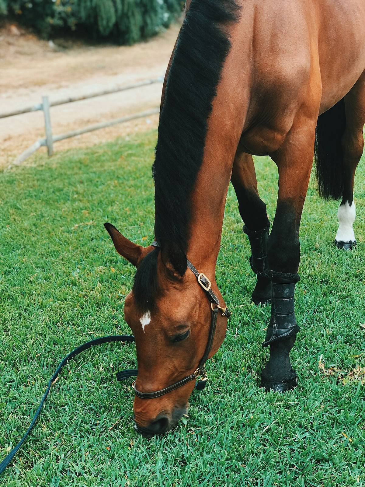

Daniel Deusser y Navarro van het Eelshof ganan la prueba de 1,50 m del CSI5*-W de Madrid, clasificatoria para la Copa del Mundo
El alemán Daniel Deusser ganó el viernes por la noche con Navarro van het Eelshof el Trofeo Mutua Madrileña, la prueba de 1,50 m del CSI5*-W de la Mutua Madrid Horse Week.

Era una prueba a cronómetro, puntuable para el ranking Longines (grupo B) y clasificatoria para la etapa de la Copa del Mundo del domingo. Deusser, con el castrado de 13 años, hizo un recorrido sin faltas en 60,15 segundos y dejó segundo al británico Joseph Stockdale, con Ebanking, a 21 centésimas (60,36).
Tercero fue el italiano Lorenzo de Luca con Golden du Breuil (60,70), por delante del suizo Steve Guerdat con Hadj de Bliniere (61,31) y de la alemana Janne Friederike Meyer-Zimmermann con Cellagon Cascais (62,03). Hubo 23 ceros entre los 46 participantes; el más rápido de la noche, el francés Julien Epaillard con Le Coultre de Muze (59,33), derribó una barra.
Stockdale ya había ganado por la mañana el Trofeo Air Europa, la prueba de 1,45 m del grupo D del ranking, con Fmbs Therapy Systems Satisfaction (cero en 50,35). En esa prueba fue segundo Eduardo Álvarez Aznar con Qevita vd Bisschop (50,90) y tercero el neerlandés Leopold van Asten con VDL Groep Kiara (51,68).
El concurso sigue el sábado con el Trofeo Cervezas Victoria (1,50 m, con ronda ganadora) y termina el domingo con la prueba de la Copa del Mundo, sobre 1,60 m y con desempate.
Todo sobre Mutua Madrid Horse Week →
Por Lucía Valdeolmos